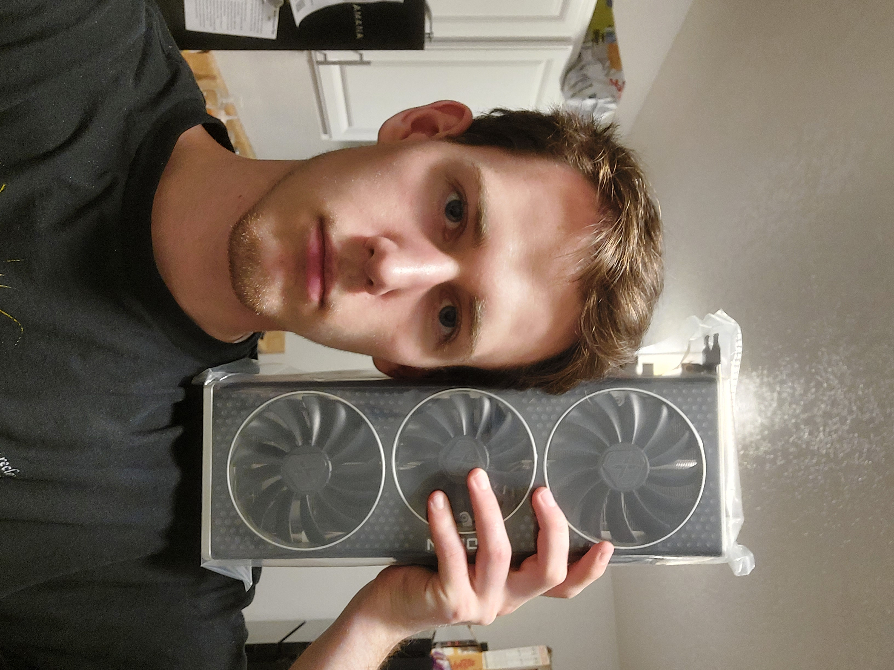

Check out the finished product!
Parts display
Every build tutorial video on YouTube starts with all the unboxed parts being shown and it looks really cool.

ASRock B590E Riptide
I used an ASRock B590E Riptide motherboard for a few different reasons. I wanted to hop onto the new Am5 platform from AMD that was maybe a year old when I bought this motherboard. AMD has done a great job releasing new CPUs for their Am4 sock and I want that longevity.The "E" also means that one of the Pcle ports has Pcle5 which is the newest 16channel port. This will also hopefully increase longevity of the motherboard since the next several generations of GPUs will probably use Pcle5. There is a second Pcle4 16 channel port that I could move my current GPU to if I got a bigger case.

Am5 CPU Socket
I went with a AMD Ryzen 7600 cpu because it has enough cores for the gaming and workspace projects that I was planning to use the computer for. Since the AM5 platform will probably have new CPUs in the future, I figure I can upgrade later if I need a CPU with more cores or speed.
My budget was another consideration and the Ryzen 7600 helped in 2 ways. The "x" version of the card has a much higher power draw which means a better CPU cooler would be needed. The non-x, however, only has a TPD of 65W and comes with a stock cooler that can handle that. The second budget related issue what figuring out which parts would bottleneck other parts. Based on the GPU price, a more expensive CPU would start to take a higher percentage of the overall build compared to the GPU.

Motherboard with attached CPU
I was able to attach the CPU and cooler without a problem.

Vetroo AL600 Black Mid-Tower
There were several reasons for wanting a mid-tower PC: air cooling, upgrade options, GPU space. I really wanted the tempered glass side panel because it just looks cool. I think this case can technically fit 2 360mm radiators, although I don't think that's realistic.

The Radeon 6950XT 16GB
I picked this up for $610 and it should last many years. Fingers crossed.
GPU Mount
I got confused about which vent I needed to remove and accidently removed one of the vents that I didn't need to.

RGB/Fan Connector
I need to go back at some point and get these fans set up as proper PWM fans so that they aren't running at full speed all the time.

Assembled Case